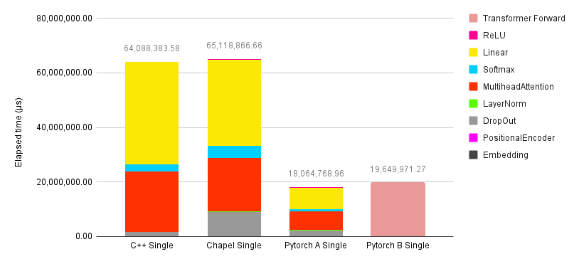
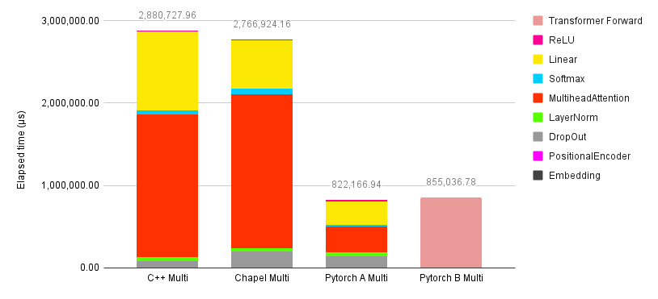
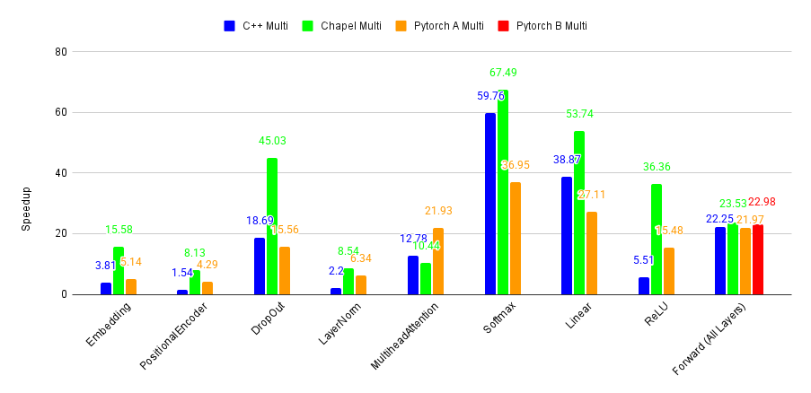
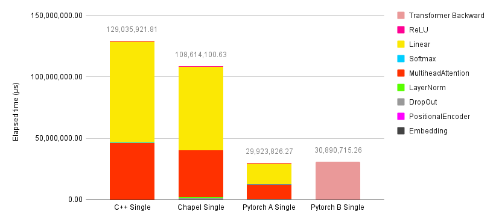
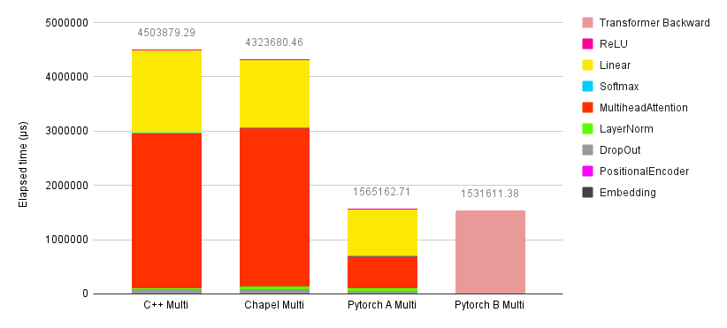
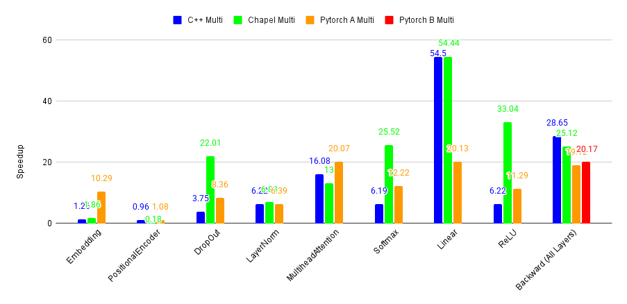
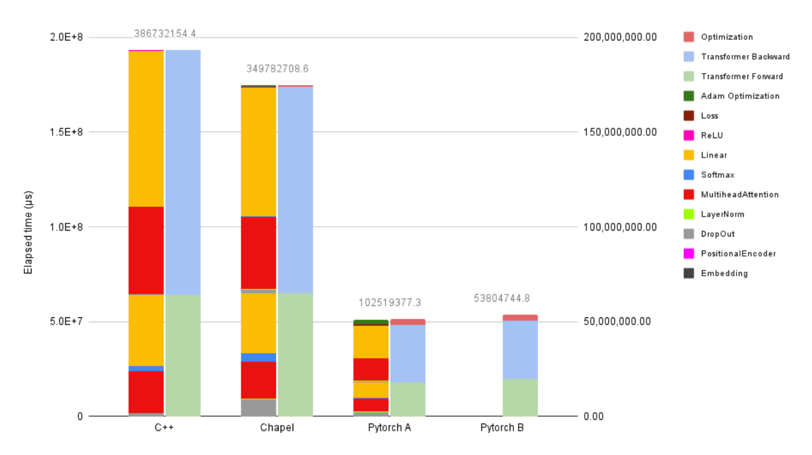
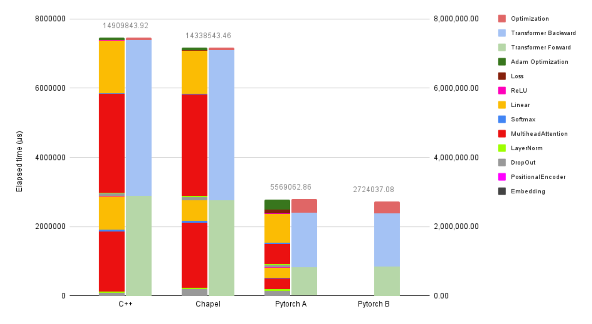
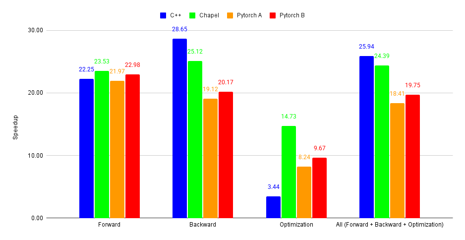

Introduction
This is the second and final part of this series, which studies the expression of transformers in Chapel and C++, comparing to Python. If you’re just joining us, you may want to check out the previous article, where we explored the experimental methodology and the first test, running a small-size model on a single thread. In this part, we focus on the second test, which uses a full-size model on single and multiple threads, while also discussing the productivity of Chapel in developing this project.
Full-Size Model on Single and Multiple Threads
In this test, we moved our experiment to Machine B and set the model to full-size, as it has enough memory. The C++ version is integrated with OpenMP to enable multi-threaded computation, and for Chapel, multiple language features such as forall, coforall, and custom iterators were used. The parallel algorithms used in both C++ and Chapel are exactly the same. Synchronization happens at the end of each layer in both the forward pass and backward pass. The degree of parallelism for each layer is estimated individually to achieve the best performance on Machine B; for example, Softmax performs best on 68 cores, while LayerNorm performs best on 52 cores.
To see the gained speed-up, all models were tested with both a single thread and multiple threads on Machine B. The benchmark was conducted in the same way as on Machine A, but with only 40 iterations, as the single-threaded benchmarking took a while. The detailed data from this experiment can be viewed in this Google Spreadsheet, and all implementations can be obtained from this GitHub link
Result of Forward Pass
Now, it can be seen in Figures 4 and 5 that both PyTorch versions gain a huge advantage from having an optimized linear algebra library integrated into the model, resulting in better performance in the Linear and Multihead-Attention layers. Nevertheless, they still lost to Chapel and C++ on other layers. Although it might seem unfair to compare the Chapel and C++ versions, which are written from scratch, I think it is still a good idea to have existing frameworks as a reference.

Fig. 4. Time spent on each layer (in microseconds) during a single forward-pass training iteration for each model, measured on Machine B (single-threaded) using the full-size model configuration.

Fig. 5. Time spent on each layer (in microseconds) during a single forward-pass training iteration for each model, measured on Machine B (multi-threaded) using the full-size model configuration.

Fig. 6. Speedup of each layer’s forward pass in each model, tested on Machine B compared to its single-threaded version, using the full-size model configuration.
The Chapel version somehow outperforms the C++ version, thanks to performance in the Linear layer, which consumes huge resources. However, layers such as DropOut and Softmax in the Chapel version are still slower than in the C++ version. The reasons for such effects are likely the same as the reasons mentioned in the single-threaded discussion.
Result of Backward Pass

Fig. 7. Time spent on each layer (in microseconds) during a single backward-pass training iteration for each model, measured on Machine B (single-threaded) using the full-size model configuration.

Fig. 8. Time spent on each layer (in microseconds) during a single backward-pass training iteration for each model, measured on Machine B (multi-threaded) using the full-size model configuration.

Fig. 9. Speedup of each layer’s backward pass in each model, tested on Machine B compared to its single-threaded version, using the full-size model configuration.
As you can see from Figure 8. performance of almost all layers of Chapel and C++ are on par with each other in the backward pass, except LayerNorm which happened to be slower. Besides, both need more optimization on linear algebra in order to be as good as PyTorch. Figure 9 shows that in this case, Chapel exploited the parallalism better than C++ in many layers. I have not fully understood the reason, but I suspect that this is probably due to the lower computation per time achieved in a single thread with the same memory bandwith request. Thus, the achievable performance of such layers is limited by the memory bandwith of the machine itself, and the final performance turned out to be the same.
Overall Result

Fig. 10. Time spent on each layer (in microseconds) per training iteration (including forward, backward, and update) for each model tested on Machine B (single-threaded) using the full-size model configuration.

Fig. 11. Time spent on each layer (in microseconds) per training iteration (including forward, backward, and update) for each model tested on Machine B (multi-threaded) using the full-size model configuration.

Fig. 12. Speedup of total time per training iteration (including forward, backward, and update) for each model tested on Machine B compared to its single-threaded version using the full-size model configuration.
In conclusion, the overall performance achieved is reasonable, with Chapel performing slightly better than C++ thanks to its improved multi-threaded attention and linear layers. All versions gained about 20 times speedup with multi-threading enabled.
Discussion Full-Size Model Performance
In this section, I will discuss the implementation details and optimizations I applied to achieve these results.
Matrix Multiplication
The method I chose is to parallelize the two outermost loops of the blocked tiled matrix multiplication. Since the computation-to-memory-access ratio in the inner loop is very high, the degree of parallelism for this function does not need to be limited.
forall (ii, jj) in MatMulPar(d1, d3) { // iterate ii and jj in parallel
for kk in 0..<d2 by BLOCK_SIZE { // iterate kk sequentially
// Perform matrix multiplication for each block
}
}
Matrix Operations
These functions simply divide the work into consecutive blocks. Since element-wise operations such as +, -, *, /, and other reduction functions have a low computation-to-memory-access ratio, the parallelism of these methods needs to be limited. According to estimation and testing, the suitable number of threads is typically around 24.
Softmax
This layer requires special care, as the algorithm needs a buffer to cache the exponential values. When introducing parallelism, separating the buffer for each thread is necessary.
I encountered a problem defining the buffer, as I initially tried to declare the buffer inside the loop the same way I did in the C++ version.
// Chapel
forall i in D {
var buffer: [dom] real(32); // memory allocation
Exp(input, buffer) // compute exp one time
SumReduce(buffer, sum) // use 1
Div(buffer, output) // use 2
// automatically deallocated of buffer at the end of this iteration
}
// C++
#pragma omp parallel
for(int i = 0;i < row;i++) {
float buffer[size]; // stack memory
Exp(input, buffer)
SumReduce(buffer, sum) // use 1
Div(buffer, output) // use 2
// no memory deallocation for buffer
}
The performance turned out to be very poor. This is likely because declaring the buffer inside the loop causes heap allocation and deallocation on every iteration, whereas in C++, declaring float buffer[size]; allocates the memory on the stack, avoiding this overhead. To solve this problem, the buffer must be declared outside the loop, with each thread accessing a different segment of the buffer.
var buffer: [dom] real(32); // memory allocation one time
forall i in D {
Exp(input, buffer[thread[i]]) // compute exp into thread i's buffer chunk
SumReduce(buffer[thread[i]], sum) // use 1
Div(buffer[thread[i]], output) // use 2
// no memory deallocation for buffer
}
LayerNorm
An observation that can be seen in Figure 8 is that LayerNorm is surprisingly much slower than C++ in the backward pass. This occurs in both single-threaded and multi-threaded execution on the full-size model. I have not yet fully understood the reason behind LayerNorm being the slowest on large-size matrices, even though the compiled loops are very similar. Chapel causes much more L1 cache misses than C++ does when tested with perf stat.
Multihead Attention
The new design of this layer is not complicated. Although the flow of the multihead attention layer offers opportunities for parallelism, the size of the matrices used to compute in this layer are already very large and utilize all the resources on the machine during the multiplication. Therefore, parallelization on some of the outer loops is not required.
proc forward(/*...*/) {
// ...
// Matrix is large and consumes all resources when computed,
// so no need for parallelization here
for i in 0..#batch {
MatMulABTPar(WQ, inputQ[(i * block)..#block], QT[(i * block)..#block]); // QT = (WQ)^T * inputQ
MatMulABTPar(WK, inputK[(i * block)..#block], KT[(i * block)..#block]); // KT = (WK)^T * inputK
MatMulABTPar(WV, inputV[(i * block)..#block], VT[(i * block)..#block]); // VT = (WV)^T * inputV
}
// Matrix inside is small, so parallelization here is preferable
forall i in 0..#batch {
for j in (i * head)..#head {
MatMulATBPar(QT[(j * blockPerHead)..#blockPerHead], KT[(j * blockPerHead)..#blockPerHead], A[(j * blockAtt)..#blockAtt]); // A = (Q)^T * K
}
}
// ...
}
Other Layers
As for the implementation of other layers, it is straightforward. Some layers might not be able to exploit all available parallelism—for example, the embedding layer, which doesn’t use much computation. Fortunately, this layer doesn’t consume as many resources as the Linear and Multihead-Attention layers and therefore does not impact performance significantly.
During optimization, every parameter update was done individually using task creation features in both C++ with OpenMP and Chapel. This part of the training process is already much better than in PyTorch when running single-threaded, and it improves even more with parallelism. Additionally, both C++ and Chapel tend to have the same performance when doing the parameter updating.
Discussion on Productivity
As this is my very first Chapel project, whereas I have been writing C++ for years, productivity isn’t fairly comparable. However, it did exhibit some advantages and disadvantages throughout the project, allowing me to share some thoughts about them as a user.
There are several things that I like about Chapel:
- The language is easy to learn, as it’s similar to Python.
- It provides easy parallel programming through for loops, custom parallel iterators, automated thread scheduling, etc.
- As a language that requires type declaration of variables, this allows the user to detect errors at compile time.
- Object memory management
- Memory management between threads
- It is easier to make the program run on multiple locales.
- The Chapel developers are very active and friendly, as can be seen through continuous updates and quick responses to the reported issues.
Nevertheless, there are several shortcomings I found about Chapel, too:
- Long compilation times, and especially so when multi-locale is introduced.
- Downcasting among numeric types, such from
real(64)toreal(32), is done implicitly in C++, but not in Chapel (This is my personal thought; I am not sure which approach is better.) - All the performance issues that I mentioned in this blog. This causes tricky fixes to be made, and it makes the code a bit messy.
Chapel took as long as C++ to implement the transformer model in this project, as it required some tricky fixes. The productivity of implementing and parallel programming tends to be the same as C++ and OpenMP, as far as this project is concerned. I believe that having the same level of expertise, Chapel could be more productive than C++ and Python in doing scientific simulations that require parallelism on multithreading and multiple locales, as it automates data movement and configuration. However, it has many fewer support frameworks than Python, making it hard to create a project, and less control over the machine than C++, making it difficult to conduct performance research.
One controversial thought I have is that generative AI, such as ChatGPT, should be able to help programmers fix and implement projects, for example, by creating simple test cases. However, since the language is not yet very popular and has less code available on the Internet, combined with the backwards-incompatible evolution of the language, current large language models do not have much knowledge of it and can easily become confused, which can cause them to produce faulty code. Interestingly, there is already a Chapel blog, Experimenting with the Model Context Protocol and Chapel, that explores this idea. By using the Model Context Protocol (MCP), they achieved surprisingly good results. I believe that improving the capability of large language models in Chapel programming could greatly impact productivity and should be investigated and improved further.
In the end, Chapel serves well as a programming language dedicated to parallel programming and indeed increases productivity compared to C++. It also has many features that can improve the language’s performance and efficiency.
Even though today it might be more feasible to enable parallel programming by creating a programming language dedicated to it, I dream of having a highly capable compiler, interpreter, or tool that can handle all parallelization, optimization, and deployment automatically and can be applied to any programming language.
Conclusion
This project illustrates an attempt to implement the Transformer model in Chapel. Across both parts, we explored single-threaded and multi-threaded performance, and compared Chapel with C++ and PyTorch. The final performance achieved is reasonable and comparable to C++, and potentially to PyTorch if its optimized linear algebra algorithms are utilized. Nevertheless, many performance issues were encountered during implementation, such as problems with multidimensional arrays, vectorization, loop unrolling, random number generation, and more. Currently, many issues have been resolved; for example, vectorization now enables optimization in exponential computations. Some problems are still being addressed but can be mitigated using special techniques, such as optimized random number generation and ternary operation handling.
Additionally, I would like to see some language features implemented, such as ref in classes and records, as well as stack-allocated arrays. Faster compilation times would also be a great improvement.
Regarding the limitations of this project, due to time constraints and my current capabilities, the scope is limited to CPU performance, both single-threaded and multi-threaded. GPU and multi-locale performance are interesting topics but were not explored. These areas could be investigated further in the future to evaluate performance differences on GPU and multi-locale systems.
As this is my first Chapel project, and one of my first performance-measurement projects at this scale, many improvements can surely be made in code design, implementation, testing, benchmarking, and presentation. I would greatly appreciate any advice and comments. You can submit them via email at thitrin.sastarasadhit@gmail.com. I look forward to improving myself, growing in this field, and making a meaningful impact.